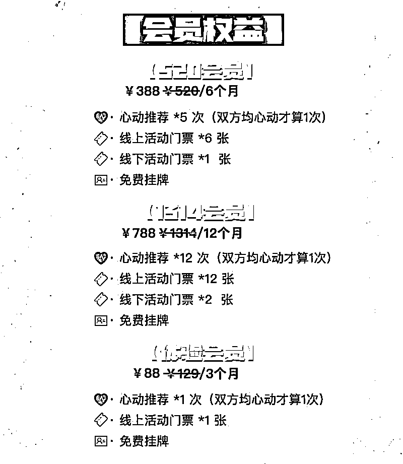
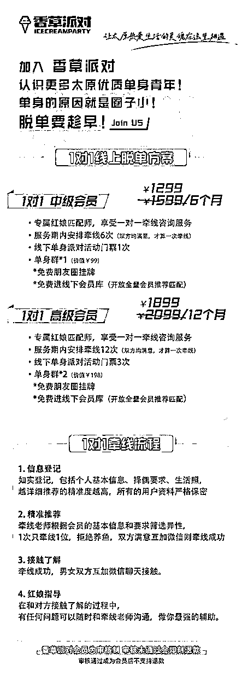
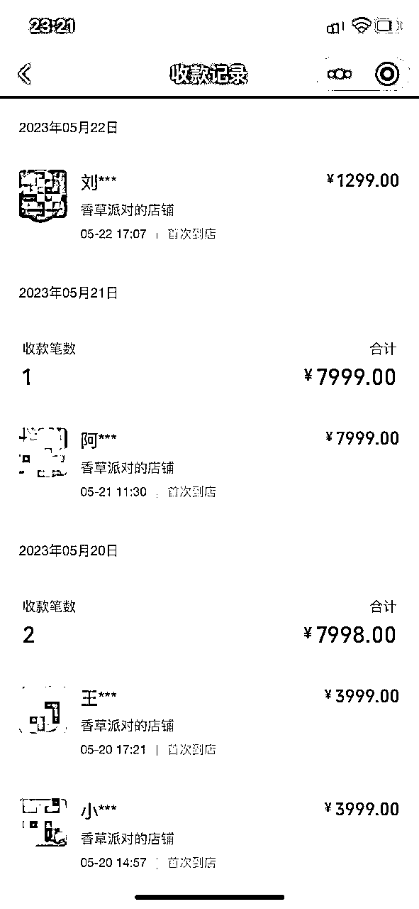
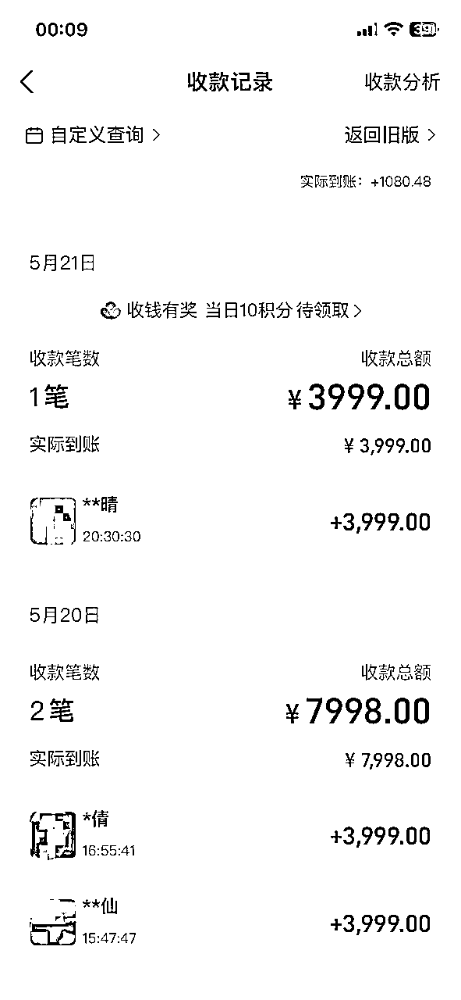

来源：https://mqxis8tihpw.feishu.cn/docx/Vj1Pda4MeoVV4KxyZkjcJuymnzg
21年8月开始入局同城相亲项目，22年扛过了疫情，23年初月入10W+稳定流水
#案例分享 #创业经历 #项目心得 #感谢生财
大家好，我是孟宝（真名就是这个，爹妈起早贪黑给起的，公司小朋友都叫我孟老师）
19年从上海互联网大厂辞职回到太原老家，上了一年多的班，估计和很多第一次创业的朋友一样，总觉得我的生活不应该就这样了吧，毕竟收入骤减带来的不止是生活质量的下降，更多的是内心成就感很精神状态的不满足。
于是21年加入生财，开始尝试看一些精华帖，这里首先感谢我的两位领路人，是看了两位大佬分享的帖子，让我有了动力开始入局同城相亲项目：
@唐大（https://t.zsxq.com/0eC6QLC05）
@杜总（https://t.zsxq.com/0ejAfJM9B）
21年夏天，用了大概一周的时间，去了解所有做同城相亲的公司，大到连锁品牌，小到传统婚介，加他们的微信，打他们的电话，了解价格和模式。因为我本身是互联网出身，外加圈友们的精华帖分享，所以当时就笃定了先利用私域成交的模式起盘（当时只考虑了做线上成交模式）
因此初期的调研基本是围绕【线上牵线】的产品模型（价格、服务时长、介绍几次，介绍流程等）和【相亲活动】（活动形式、活动频次、报名价格、活动人数等）这两块业务来走的，也可能调研的并不细致，总之调研完觉得机会大大的。
后期转线下业务的时候，也经历了调研，毕竟是同城业务嘛，了解同城现状还是很有必要的。所以调研和学习一样，一定是持续，长期的。不过建议大家的心态不要把同行当做竞品对手来看待，这个行业没有绝对的竞品，就好比你是爱奇艺的会员，一样有可能在优酷继续办会员，相亲也一样，格局打开之后，路会更长远（我甚至在今年初，0元收购了一个本地个人红娘资源，想听故事的可以慢慢聊）
最开始的时候没有底气和信心，88就可以享受服务，但是没两天我就重新调整了价格，现在回头来看，一开始价格定的太太太低了！！！我目前线上牵线的业务依旧保留，不过已经变成了1299起步了。


线上牵线这个产品目前基本很少卖了，销售们心里也清楚，一个线下的单子抵得上好几个线上的单子了。但是在你没有1000人资源的时候，建议还是可以先用线上的模式过渡。当然我知道有一个团队，他们就是纯线上的业务，一个月也能跑10W+，客单价1000一个月100单成交，很猛。
线下活动是能够在前期迅速吸粉和建立信任的模式。
羊群效应，你初期吸引来什么样的人多，后续吸引相同属性的人就会容易一些，所以也要确定好你的目标用户。另外就是让人们看到来参加你们活动的人的质量，感受你办活动的用心，最重要的是积累活动素材，用做传播！！！
活动类似：轻社交为主的运动局或者有交流较多的活动，例如羽毛球、飞盘、饭局、酒局、狼人杀等等
活动规模：我现在基本维持在每个月8场线下活动左右，每场人数大约12-20人之间，并且保持至少一场30人以上的中型派对。
活动门票：类似狼人杀的小活动基本就是四五十左右，大一点的活动，或者有设定门槛的活动，例如体制内专场，或者硕博专场，价格可以稍微高一点。如果一场活动会有场地费或者餐食费等等，我基本上也会把成本控制在40%以内。
当然了，有的时候线下活动，人比形式更重要。对于相亲的人来说，你的活动再有趣，没有适合我的人，我都觉得这趟白来。所以建议大家，即使对于无门槛的活动，报名的时候也做个基础的筛选，不合适的人就不要来了。
其实大家都很清楚活动本身不赚钱，利润太低了。但我的想法是，现在年轻人一上来就接受相亲设定需要教育，且我所在城市都是传统模式居多，没有团队像我一样用心做活动，那活动派对就是我的差异化。混沌大学李善友老师说过一句话，叫“与其更好，不如不同”，所以我就想，不如稍微花点心思做些差异化出来，即使不赚钱，但品牌收益和口碑收益会更大。
最核心也是利润率最高的产品。我是21年8月开始起盘，在半年左右纯线上业务月稳定3-4W，有1000个资源的时候开始开展的线下1对1业务，其实走的路还是相对稳了点、慢了点，但没想到4月份就迎来了第一波疫情封控，足足封了1个月。
做相亲两年，我始终认为这不是一个赚快钱的生意，所以建议大家，一定考虑清楚再入局，一旦做了很难停下来。我经常和团队开玩笑，这是一个幸福的行业，是一个积德的工作，你的一个推荐，也许是别人未来一辈子的相守！所以我在招聘的时候，服务售后岗位的价值观一定要正，生长环境要幸福！总结一下就是看到别人幸福，自己真的会由衷的感到欣慰和成就感！毕竟谁不想既有成就感，又有钱赚呢。
想要做好相亲，一对一的撮合和匹配真的很重要！撮合和匹配的服务很重，远比想象的要更难，男不上娶女不下嫁，几十年的规则和观念很难打破，优秀的男生越来越少，要求高的女生越来越多，本身就是一个矛盾的存在。
客户的心理教育也很难，有的人根本没谈过对象，有的人相亲几十次都是不成功，各种人都见过了。所以也衍生出了，除了基础匹配推荐之外的服务项目（甚至可以单独开展业务），同时也是提升服务差异化的点，毕竟服务才是影响口碑的重要环节：
单身的原因，例如：
这些问题如果你都能帮助客户解决，那你绝对是领军团队！
PS：和每个会员做朋友，一定不会错
抖音我做了如下一些类型的账号，总结一下：
【口播号】引流效果最好，但漂亮的女生口播引来的几乎都是男粉。最近一个神奇的现象，我现在一个红娘的口播号，内容好好讲，数据一般。但自己随便拍拍特效歪头的视频，配上简单的配音文字，都能至少100+的点赞。我觉得只要是同城流量，让人家知道你是干什么的，好像也挺好。
【街坊号】大部分来的是只对被采访嘉宾感兴趣的人，严格意义上讲属于泛流量，少部分是精准相亲粉，需要养。
【活动号】来的高颜值的比较多
【嘉宾自我介绍】对相亲活动感兴趣的用户，精准用户
【图文资料】效率贼高，封号也快
整体用户颜值和素质都比较高，虽说大基数不如抖音，但持续做，一定见彩虹！我最近好几个快速成交，都是小红书活动招募内容吸引来的用户，本来是冲着报名活动来的，直接线下会员转化成交。
想要尝试这个项目的伙伴一定对于如何起盘和都很清楚了，不多赘述。聊聊我自己吧，如果用现在的状态和理解，回想当时做相亲这个项目的时候，准备不充分的地方还是很多的，但依然能做成，我觉得很重要的一点就是执行力！
我非常欣赏生财价值体系里提到的一个关键点【空杯】。不管之前自己多牛逼，在某个领域多擅长，在你听他人分享或者学习案例经验的时候，一定要尝试忘记之前自己所谓擅长或者以为掌握了的技能，重新吸收，分析琢磨别人这么做决策背后的逻辑。之前我在做管理做运营的时候，总是习惯考虑很久，方案要想完整、数据要做充分、不然提案很怕leader不满意。但我实际执行同城相亲这个项目的时候，我基本上是看到一个好的方案或者脑子里想到一个好的点子，马上就去落地执行、测试，好不好管不管用，试试就知道了，永远只停留在想的阶段，一定没有办法往前走，这也是变相解释了，航海的价值真的很大！
先给大家看一下上周末两天（微信和支付宝）的收入吧，虽然不多，我觉得数字能够说明一切。


相亲这个项目的体量我想不用多说，未来几年一定还是有机会的，就看能不能坚持，长久的干下去。现在依然能看到很多个人创业者随便做做线上推微信，也能赚到钱，因为做流量一定比做服务简单的多，但我也看到很多个体创业者，做不到半年就坚持不下去了。我觉得任何一个生意，只要能坚持，能长久，是利他的项目，都是值得且持续做的。
其实创业这件事情和相亲恋爱有一个心态上的共同点，就是没有100%完美匹配的人，也没有100%好的项目。我经常和我的会员们说，咱们要做一个「成长心态的人」而不要做「固定心态的人」。
什么意思呢？
固定心态的人会认为事物是一成不变的，他们会认为最重要的努力是在寻找和追求爱情的阶段，会不惜代价花费大量的时间成本、金钱成本去寻找那个所谓100%匹配的人，然后找到了就认为幸福就有了，但是在之后的相处过程中一旦出了问题，就会认为当初选错了人，说明人不对。
成长心态则认为事物是可以改变的，因为每个人都会有优缺点，没有100%完美匹配。那么在一段关系里，随着缺点和困难的越来越多的暴露，固定心态的人就会反复质疑当初的选择，而成长心态的人，会磨合性格，尝试发现问题，解决问题。
项目和创业也一样，不要觉得找到一个项目做不下去就觉得这个项目不对，也应该去不断的发现问题，去解决！去拼！去搞定他！自信且乐观，因为即使你找不到你特别喜欢的那个水杯，但丝毫不影响它能帮助你盛水解渴！